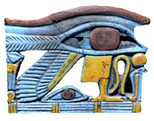

|
|
Practical CoursesMiniature paintingBirkbeck, University of London20 Friday mornings from Friday 14 January 10.30 - 13.30 Clore Education Centre, Studio This practical course covers the techniques of Indian, Mughal and Persian miniature artists; the use of traditional brushes, paper and colour pigments. Students will also be introduced to the context in which miniature paintings were made as well as the origins and development of this highly designed and expressive form. Tutor: Fatima Zahra Hassan20 places Further information and booking through Birkbeck: Telephone Carol Watts on 020 7631 6652 or ce.watts@bbk.ac.uk £162, concessions £82 Creative writingWorkers Education Association (WEA)10 Thursday mornings from Thursday 14 April 11.00 - 13.00 Clore Education Centre, Claus Moser Room This course, in collaboration with the Workers Education Association, will use the Museum's collections as inspiration for new writing. We will do exercises each week in class to generate new writing and course members will share their writing with each other and the tutor. We will also look at examples of published contemporary writing and discuss key techniques in the writing of poetry and short stories. Suitable for beginners. Tutor: Maureen Osborne15 places Further information and booking through the WEA: telephone Esther Morris on 020 7613 7550 £100, BM Friends £90, concessions £60 Exploring drawing (Summer)Workers Education Association (WEA)6 Monday afternoons from Monday 9 May (till 20 June, excluding bank holiday) 14.00 - 16.30 Clore Education Centre, Studio See the British Museum through an artist's eyes! Drawing from the sculpture and objects on display, with guidance on technique, media and style, you will gain an insight into our cultural heritage as well as enhancing your drawing skill. Held jointly with the Workers Education Association. Further information and booking through the WEA: telephone Esther Morris on 020 7613 755015 places £45, concessions £35 Other CoursesSexuality and gender in Native North American CultureBirkbeck, University of London12 Monday evenings from Monday 4 April 18.30 - 20.30 Clore Education Centre, Sackler Room How have sex and gender differences been implicated in broader economic, political and social processes throughout American Indian history? Using art objects, archaeological, historical and anthropological data, this course examines the sexual division of labour, indigenous and post-colonial gender roles, ideologies, ritual, and the existence of third genders. Tutor: Massimiliano CarocciFurther information and booking through Birkbeck: Telephone Carol Watts on 020 7631 6652 or ce.watts@bbk.ac.uk £82, concessions £43 The Far East on screenBirkbeck, University of London12 Thursday evenings from Thursday 14 April 18.30 - 20.30 Clore Education Centre, Claus Moser Room Indonesia, Malaysia, Thailand, Vietnam, the Philippines and Cambodia all have a long but little known history of filmmaking. Here we examine South East Asian cinema in relation to nationhood and modernity, the Chinese diaspora, colonisation and folk entertainment. We will also consider how genres such as ghost and melodrama acquire indigenous emphasis. Tutor: May Adadol IngawanijFurther information and booking through Birkbeck: Telephone Carol Watts on 020 7631 6652 or ce.watts@bbk.ac.uk £82, concessions £43 The art of Pacific performanceBirkbeck, University of London12 Thursday evenings from Thursday 14 April 18.30 - 20.30 Clore Education Centre, Sackler Room The vibrant history of dance and ritual performance in the Pacific is reflected in the artefacts and visual records held in institutions like the British Museum. We will draw on these collections, video footage and meetings with Pacific performers in London to explore the art and meanings of performance. With a focus on Polynesia we will be covering issues of power, relationships with spirits, gender, identity and cultural change. Tutor: Jennifer E NewellFurther information and booking through Birkbeck: Telephone Carol Watts on 020 7631 6652 or ce.watts@bbk.ac.uk £82, concessions £43 Exotic passions: the meeting of Orient and OccidentBirkbeck, University of London12 Thursday evenings from Thursday 14 April 18.30 - 20.30 Clore Education Centre, Studio This course will trace the mutual fascination of Orient and Occident evidenced in their material exchanges. The discussion will cover instances of artistic and cultural interactions between Asia and Europe from the medieval to the contemporary period, exploring how the appeal of the exotic has shaped their material cultures. Tutor: Renate DohmenFurther information and booking through Birkbeck: Telephone Carol Watts on 020 7631 6652 or ce.watts@bbk.ac.uk £82, concessions £43
|
 Faience wedjat eye amulet. From Egypt. Third Intermediate Period, 1068-661 BC
|
||||
|
home |
visit |
what's on |
join |
shop |
learning |
COMPASS |
world cultures |
sitemap |
contact us |
copyright
© The British Museum, 2002 |
|||||